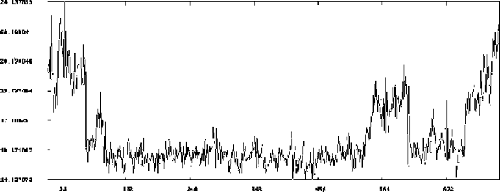
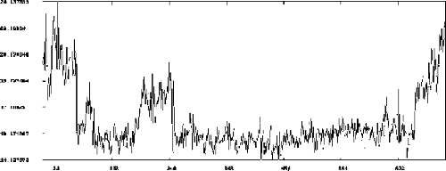

Proprietary to General Electric
Direction 5114045-800, Rev# 10
LightSpeed 4.X Service Information (Advanced)
Proprietary to General Electric |
DASTools reports a Failed iteration of Offsets/Noise Test.
| NOTE: | Due to space considerations, the Date and Time stamps have been removed from the following. |
**** Das Test Suite Execution Started ****
**** Test Selections At Accept ****
Test Name Number of Iterations
DC Cal Absolute 0
Offset Drift 0
Pop / Micro 0
DC Noise / Offsets 1
**Number of Repetitions For This Group = 1
**Total Test Failures Before Stopping = 128
Scan Key -> RP08/50258/1/1 [4x5.00 mm, 1.0 s, 31 gain]
das_dcnoise DAS Test das_dcnoise for MDAS failed 1 channels in row 1B (2):
das_dcnoise Channel Low High Actual Board Housing Elastomer
das_dcnoise Spec Spec Value
das_dcnoise 191 0.00 8.50 59.91 5 4-Inner 3
das_dcnoise Use the "Das Architecture" feature to determine filter and slot numbers.
Scan Key -> RP08/50258/1/1 [4x5.00 mm, 1.0 s, 31 gain]
das_dcnoise DAS Test das_dcnoise for MDAS failed 1 channels in row 2B (3):
das_dcnoise Channel Low High Actual Board Housing Elastomer
das_dcnoise Spec Spec Value
das_dcnoise 192 0.00 8.50 62.02 5 4-Inner 3
DC Noise / Offsets Test failed in iteration # 1
The Failure Analysis is Reported above this message
**** End of Group cycle # 1 ****
**** Test Statistics at Completion ****
Test Name Number of Remaining Total Total
Iterations Iterations Successes Failures
DC Cal Absolute 0 0 0 0
Offset Drift 0 0 0 0
Pop / Micro 0 0 0 0
DC Noise / Offsets 1 1 0 1Reference “Offset & Noise,” Auto Test and Manual Test, for an explanation of why this error occurred.
This test collects DAS Data with zero input current (i.e. No x-ray) and the Mean value of each output channel is compared to spec. Also, the Standard Deviation is measured against a Noise Spec. It involves 2 scans, the first in a 4 x 5.00mm mode, Gain of 31 and the other in a 8 x 1.25 mm mode, Gain 5.
Failure analysis is similar to that of DC Cal with the exception that there is no input test voltage applied. Depending on failed pattern, based on DAS/Detector architecture, the fault may be a converter board, DAS/Detector interface, power supply, etc.
DCB
Converter Board
Elastomers
DAS Fans
Power Supply Assemblies
DAS Backplane/Chassis Assemblies
Detector
| ALWAYS Troubleshoot Noise problems with all DAS covers and Air Fan plenum installed. BEFORE Troubleshooting DAS/Detector issues, make sure the proper ESD and Detector handling materials are available. | |
Check Noise (procedure)
Plot Scan file using Scan Analysis (Procedure)
Check +5V and -5V Analog Power Supplies for Noise
RANDOM noise spike higher than spec
NON--RANDOM noise spike higher than spec. investigate the channel(s) that fail.
Check elastomer
Check detector flexes
Check DAS Backplane
Check Noise (Procedure)
Bring Up DAS Tools
[OPTIONAL] To view the DASTools error log as it updates, bring up a UNIX window and "tail" the log file on the left monitor. This makes looking at the errors more convenient.
Change Directory to; cd service/state/ and
type tail -f -n 50 ssw.dastools.hist<ENTER>
To Exit, <CTRL C>
In the Manual scan mode of DASTools, run 1 iteration of Offsets/ Noise
Offset / Noise takes 2 scans at the following parameters:
Scan 1: 4 x 5.00mm / Gain 31 / Stationary
Scan 2: 8 x 1.25mm / Gain 5 / Stationary
PASS: YOU ARE DONE. If DASTools reports the test passed successfully, then Stationary Offsets and Noise are within Specification.
FAIL: Noise is out of spec. Plot Scan file using Scan Analysis, and proceed to next step.
Plot Scan file using Scan Analysis (Procedure)
There have been cases of “known Problems” that can cause Noise specs to fail. They are noise created by a characteristic Noise “Hump,” caused by +5V and -5V analog power supplies, converter cards, elastomers, flexes or backplanes.
In Scan Analysis. Select the Exam/Series/Scan number of the failed scan.
Select MSD and plot data Raw (i.e. No corrections)
Analyze the Std. Dev. For all rows, or the row which failed Noise specification.
Continue with the next step
Check for Characteristic Power Supply “Hump,” caused by +5V and -5V analog power supplies
Does the plot from the previous step look like the “Hump Illustration”?
If NO, then skip to the next step (4), checking for noise higher than spec.
If YES, then proceed with this step.
Characteristic “humps” caused by 5V analog power supplies are shown in Illustration 1 and Illustration 2.
This “Hump” is caused by one of the 5V analog power supplies that has a higher current draw than specified. This higher current creates a stronger magnetic flux from the supply's transformer. This magnetic flux induces noise to the DAS backplane as a result of some perpendicular signal traces on the backplane to the flux line pattern. All systems from CT manufacturing have Power Supplies that are screened for proper current requirements.
SOLUTION: Replace the problem power supply and recheck noise and plots
PASS: Noise is gone, YOU ARE DONE
FAIL: A number of situations could exist:
Noise could be coming from Converter card. Continue with troubleshooting Non-Random Noise.
With a RANDOM noise spike that is higher than spec., proceed to Step 4.
With NON-RANDOM noise spike that is higher than spec., investigate the channel(s) that fail. Record DAS Channel number and Row. Proceed to Step 5.
With NON-RANDOM noise spike that is higher than spec, and noise that doesn't follow card, proceed to Step 6.
Random noise spike higher than spec
Run 5 iterations of Offset/Noise scans to determine if the failure is random or if multiple channels fail which are not consistent with different iterations. If random, open up all chassis and pull out and re-seat all cards.
REPEAT NOISE SPIKE TEST
PASS: YOU ARE DONE
FAIL: Check Power Supply Noise
Non-random noise spike higher than spec. Investigate channel(s).
Using DAS Architecture, determine the suspect Converter Board with the problem.
Open up DAS chassis covers and re-seat converter board.
Repeat Noise scan.
If the noise reoccurs on the same card. Swap card with a card 4 positions away. This will keep the failure on the same row so that it will be easier to identify if the problem followed the board.
Repeat Noise scan.
If the noise follows the card replace card and run dc noise. Depending on original location of the board, and how far out of spec, it is possible to move the board to the outside in the area of double or triple cells, where the noise spec is higher. The board may pass in this area.
PASS: Replacing card successfully fixed noise. YOU ARE DONE
FAIL: Noise doesn't follow card, proceed with the next step.
Check elastomer.
Move to the Flex to Back plane connections. USE ESD PRECAUTIONS (ESD WRIST STRAP, FINGER COTS, DETECTOR BOOTIES)
Using DAS Architecture, determine the corresponding Housing and elastomer number.
Turn off DAS Power, remove Air Plenum, and remove clamps and top cover of suspected housing.
Remove the suspected elastomer and visually inspect for debris. Replace the elastomer with a new one.
Re-assemble housing, reinstall air plenum, turn on DAS power, wait for self-test to finish, and rerun noise test.
PASS: Noise goes away. YOU ARE DONE
FAIL: Noise doesn't go away. Go to the next step.
Check detector flexes.
Turn off DAS power, remove Air Plenum, and remove clamps and top cover to suspected housing.
USE ESD PRECAUTIONS: Remove Detector Flexes (4) from under that specific top cover area, and place “Bootie” over flexes to prevent ESD damage to Detector.
Carefully remove ALL the elastomers (Qty. 8)
Turn on DAS power, Leave the Axial switch OFF, and rerun Stationary DC Noise.
PASS: Noise goes away. Suspect possible Detector, Escalate problem.
FAIL: Noise doesn't go away. Suspect DAS Backplane. Go to the next step.
Check DAS Backplane.
Remove associated converter board and visually inspect connector for dirt/dust/debris. Clean with clean compressed air.
Repeat Noise scans
PASS: Noise goes away. You are Done.
FAIL: Noise doesn't go away. Escalate problem, possible bad backplane.
END LEVEL 1, ON SITE TROUBLESHOOTING
Collect all data gathered during the above procedures.
Escalate problem.
Illustration 1: -5V Analog Power Supply “Hump”

Illustration 2: +5V Analog Power Supply “Hump”
